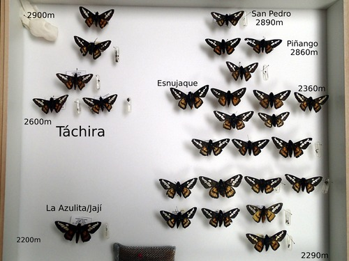

Ardaris eximia
Papilionoidea, familia Hesperiidae
Durante los muestreos de mariposas de NeoMapas capturamos algunos ejemplares de Ardaris eximia, una de las dos especies que conforman el género Ardaris, endémico de los páramos venezolanos.
Detecciones
Ardaris eximia fue detectada en 4 rutas : NM06, NM26, NM57, NM58; y en muestreos oportunistas en la celda h05.
Ejemplares en colección

Conservación
La información de los muestreos de NeoMapas fue integrada en las fichas del Libro Rojo de la Fauna Venezolana para estas dos especies:
https://especiesamenazadas.org/taxon/arthropoda/insecta/lepidoptera/hesperiidae/ardaris
Ferrer-París, J. R., Cardozo-Urdaneta, A., Lozano, C. y Orellana, A., (2015) Mariposa hespéride altiandina, Ardaris eximia, En: J.P. Rodríguez, A. García-Rawlins y F. Rojas-Suárez (eds.) Libro Rojo de la Fauna Venezolana. Cuarta edición. Provita y Fundación Empresas Polar, Caracas, Venezuela., Recuperado de: www.especiesamenazadas.org/taxon/arthropoda/insecta/lepidoptera/hesperiidae/ardaris/mariposa-hesperide-altiandina Jueves, 16/11/2023
Ferrer-París, J. R., Cardozo-Urdaneta, A. y Orellana, A., (2015) Mariposa hespéride paramera, Ardaris hantra, En: J.P. Rodríguez, A. García-Rawlins y F. Rojas-Suárez (eds.) Libro Rojo de la Fauna Venezolana. Cuarta edición. Provita y Fundación Empresas Polar, Caracas, Venezuela., Recuperado de: www.especiesamenazadas.org/taxon/arthropoda/insecta/lepidoptera/hesperiidae/ardaris/mariposa-hesperide-paramera Jueves, 16/11/2023
Documentos
Ferrer-Paris, José Rafael, Jon P. Rodríguez, Tatjana C. Good, Ada Y. Sánchez-Mercado, Kathryn M. Rodríguez-Clark, Gustavo A. Rodríguez, y Angel Solís. 2012. «Systematic, large-scale national biodiversity surveys: NeoMaps as a model for tropical regions». Diversity and Distributions 19 (2): 215-31. https://doi.org/10.1111/ddi.12012.